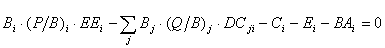
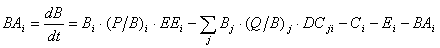
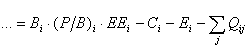

where B is biomass, P production rate, EE the ecotrophic efficiency, C the catch rate, BA the biomass accumulation rate, E the net migration rate, Q the consumption rate, DCji the proportion i contributes to the diet of j (each of the consumers). Separating the biomass accumulation rate, BA, and re-expressing as a differential equation:


where Qji expresses the consumption rate for consumer j of prey i. We can then solve for aji = Qji/(Bj·Bi), which defines the Lotka-Volterra mass-action term a the quotient of the amount of i consumed by j, divided by the product of their biomasses.
This mass-action term is used as ‘fixed support’ for the ‘lever’ which, in Ecosim, regulates the consumption of predators, given the changing biomasses of their preys, and their own changing biomasses.
The values of a depend obviously on the units used, and the biomass units used in Ecopath render difficult a direct interpretation of the numbers in the ‘Search rate’ table. However, they can easily be converted into values of a applying to single organisms, given that the ratio of the individual prey and predator weights are divided into the values of a for each pair of prey and predator.